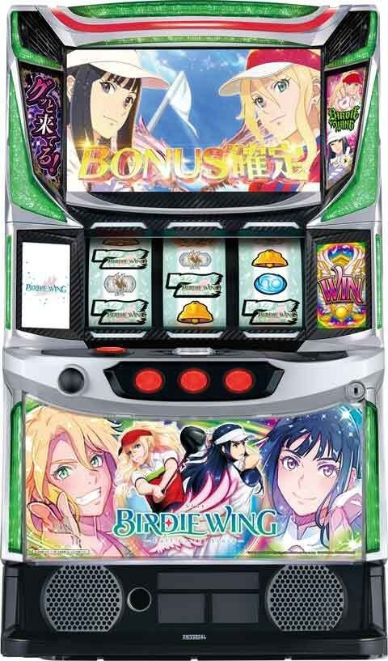
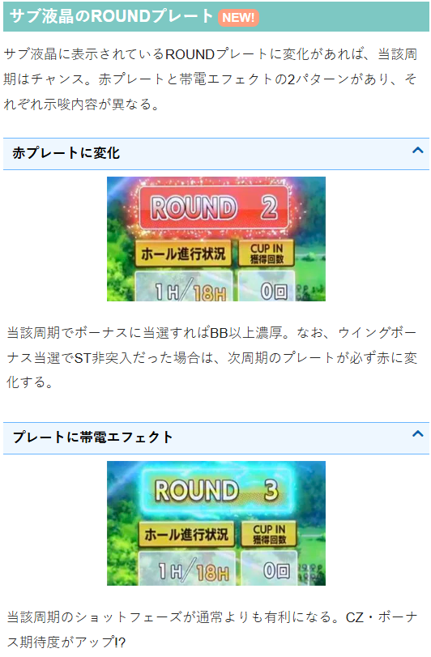

BIRDIE WING ‐Golf Girls’ Story‐

機種情報
【天井情報】
通常時を10周期消化後、バーディーボーナスに当選（=STにも当選）。
天井到達時は11周期目のスタンバイフェーズ開始から前兆がスタートし、ボーナスを告知する流れ。
設定変更時は天井が7周期に短縮されるため、8周期目のスタンバイフェーズでボーナスに当選する。
【リセット判別】
不明
【有利区間について】
不明
狙い目
周期タイプ（1周期平均110Gくらい？）の機種。イメージとしてはG1優駿倶楽部や緋弾のアリアなどに近い？
このタイプは周期頭から打ち出すケースがほとんどなため、天井狙い時は期待値表からボーダーを5-6％上げる。
主な発信者の期待値表は打ち出し60-70Gの当選を除外してるため、ボーダーを2-3％上げるくらい？
狙い目は周期頭から打ち出し想定。
【リセット狙い】
積極派 3周期から
慎重派 4周期から
【周期天井狙い】
積極派 6周期から
慎重派 7周期から
※初当たりでウイングボーナス→ST非当選の場合は、周期が持ち越しされる。ST間天井狙い的な感じ。
※初当たりバーディーボーナスはST突入濃厚。カバネリでいうエピソードボーナス。
※周期は液晶画面から確認可能。サブ液晶「ROUND」が周期数。
【ゾーン狙い】
ショットフェーズ後半（9ホール以降） ショットフェーズ消化する
【示唆関連の押し引きについて】
サブ液晶のROUNDプレート
赤プレート 当該周期を消化
※赤プレート単体は機械割103％前後？外れても周期進むので打った方が良さそう？
カップインストック
4個？5個？から ショットフェーズ消化まで
【有利区間関連狙い】
不明
やめ時
周期数やカップインストック、赤プレートなど続行する要素が無ければやめ。
その他
サブ液晶のROUNDプレート

参考元
かめとうさぎのパチスロブログ